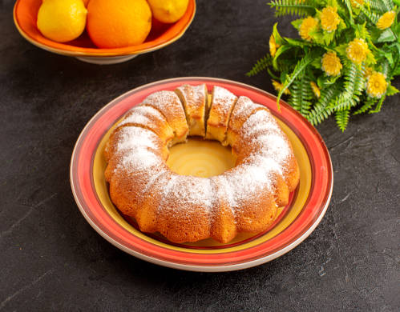

Carrot Cake

Carrot Cake - Image of KamranAydinov on Freepik
Description
Carrot cake is a popular and recognizable dessert that originates from home cooking. It is made primarily from grated carrots, which give the cake a mild, sweet flavor, along with common cake recipe ingredients such as flour, sugar, eggs, oil, and baking powder. The dough is mixed and then baked in an oven until it is soft and golden.
Ingredients
- 3 medium carrots
- 3 eggs
- 2 cups of sugar
- 1 cup canola oil
- 2 cups of wheat flour
- 1 pinch of salt
- 1 teaspoon baking soup
Steps
- In a blender, place 3 medium carrots, 3 eggs, 1 cup of canola oil and 2 cups of sugar. Blend until smooth.
- In a bowl, place 2 cups of wheat flour, 1 pinch of salt and 1 tablespoon of chemical yeast. Mix.
- Then add the blender mixture to the bowl.
- Using a whisk, mix until smooth.
- Transfer the dough to a greased and floured pan.
- Bake in a preheated oven at 180 degrees Celsius for 40 minutes.
Ingredients
Cake cover
- 5 tablespoons of sugar
- 3 tablespoons of chocolate powder
- 2 tablespoons of butter
- 2 tablespoons of milk
Steps
Cake cover
- In a pan, place 5 tablespoons of sugar, 3 tablespoons of chocolate powder, 2 tablespoons of milk and 2 tablespoons of unsalted butter.
- Stir and let cook until it boils.
- As soon as the mixture comes off the bottom, the topping is ready.
- Wait for the cake to cool and pour the still hot syrup over it.
- Spread the topping and let it cool before serving.